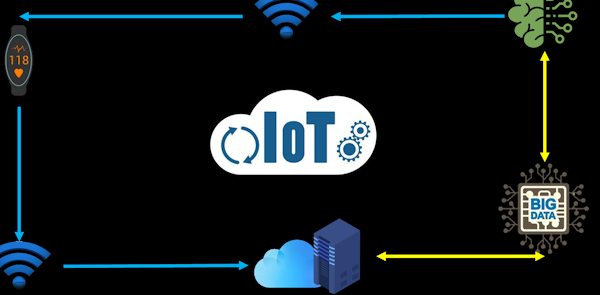

IoT Worksheet: 3 in 1
2025-04-01 by , tagged as
This worksheet containt answers for all three of the questionaires assigned on 31/03-01/04.
IoT Video Worksheet
All answers are based on this slop.
1. What does IoT stand for?
2. What is Internet of Things?
3. What are some examples of IoT devices?
4. What is the Internet?
5. What are the three primary uses of the Internet?
6. What are things? Write three examples
7. Based on the video, what is the difference between Internet and IoT?
8. What are the applications of IoT?
9. Write examples of monitoring applications
10. Write examples of control applications
IoT Questions 1 & 2
All answers are based on a reading provided by the teacher. This exercise was originally split into two parts, but I combined them into one. I considered including the reading material, but why bother.
Part 1.1: Long answer
1. What does IoT stand for, and how is it described in the text?
2. According to the text, what are some examples of "things" that can be connected to the internet through IoT?
3. How does the text describe the working principle of IoT?
4. Provide an example from the text that illustrates how IoT can be used for monitoring and control
5. In what way does the text explain the significance of IoT in everyday life?
6. In what way does the text explain the significance of IoT in everyday life?
7. What are some examples of everyday tasks mentioned in the text that can be facilitated by IoT technology?
8. How does the text describe the potential impact of IoT on personal convenience and efficiency?
9. From the text, what are the basic components of IoT technology?
10. How does the text suggest understanding IoT technology better?
Part 1.2: Single choice
1. What does IoT stand for?
- Internet of Telecommunications
- Internet of Things
- Internet of Technology
- Internet of Transactions
2. According to the text, which of the following is NOT an example of a "thing" that can be connected to the internet through IoT?
- Lights
- Cars
- Refrigerators
- Television
3. How does the text describe the working principle of IoT?
- By using magic
- By directly controlling devices with a remote
- By collecting data with sensors and processing it through servers
- By sending signals through satellites
4. Which example from the text illustrates how IoT can be used for monitoring and control?
- Checking emails on a smartphone
- Turning off lights using a remote control
- Controlling the thermostat based on temperature readings sent to the cloud
- Making a phone call to adjust the indoor temperature
5. How does the text describe the significance of IoT in everyday life?
- As a passing trend
- As the next big revolution
- As unnecessary
- As a concept that won't catch on
6. Besides home automation, which other field does the text mention as a potential application of IoT?
- Fashion
- Music
- Agriculture
- Journalism
7. What does the text suggest as a potential use of IoT technology in personal convenience and efficiency?
- Making everything more complicated
- Reducing control over household appliances
- Providing remote control and monitoring of various devices
- Making smartphones obsolete
8. What are some examples of everyday tasks mentioned in the text that can be facilitated by IoT technology?
- Walking the dog
- Turning on the television
- Controlling lighting, ventilation, and refrigeration
- Cooking dinner
9. From the text, what are the basic components of IoT technology?
- Sensors, servers, and smartphones
- Satellites, laptops, and routers
- Thermostats, televisions, and microwaves
- Sensors, servers, and applications
10. How does the text suggest understanding IoT technology better?
- By ignoring it
- By reading technical manuals
- By breaking it down into its basic components
- By avoiding all technology
Part 2.1: Single choice
1. What is the primary function of the internet, according to the text?
- Communication
- Entertainment
- Information access
- All of the above
2. What are the three main purposes of the internet from an end-user's perspective?
- Education, shopping, gaming
- Information access, communication, entertainment
- Social networking, video sharing, emailing
- None of the above
3. How is the Internet of Things (IoT) defined in the text?
- Education, shopping, gaming
- Information access, communication, entertainment
- Social networking, video sharing, emailing
- None of the above
4. Which of the following is NOT mentioned as an example of an IoT application?
- Heart rate monitoring
- Positioning personal items
- Video gaming
- Home automation
5. What are the two broad categories into which IoT applications are divided?
- Education and healthcare
- Monitoring and control
- Entertainment and communication
- Business and leisure
6. Which step in the IoT process involves collecting data of interest?
- Sensing
- Local processing
- Cloud processing
- Networking
7. What is the purpose of local processing in the IoT process?
- To limit the amount of data sent to the internet
- To process data without any delay
- To enhance security
- To analyze big data
8. Which technology is NOT listed as a technological pillar of IoT?
- Embedded engineering
- Machine learning
- Virtual reality
- Networking
9. How many technological pillars of IoT are mentioned in the text?
- 3
- 4
- 5
- 6
10. Which technology is used in the cloud processing step of IoT?
- Embedded engineering
- Networking
- Cloud computing
- Big data analysis
Part 2.2: Long answer
Look at the following picture and describe the process you can observe in the picture using the 5 pillars of IoT
